Programming
- Python
- SQL
Marketing & Business Analytics
Skills
Let's
Thanks for your time and consideration. I'm always excited to discuss analytics, marketing, and data-driven solutions.
Me · About
I am Zeying Xu, a marketing analytics specialist with 3+ years of experience transforming performance data into actionable insights, visual reports, and strategic recommendations.
Marketing
Exploring content performance, campaign effectiveness, and competitive benchmarking through data analysis.
Benchmarking
Benchmarked content performance across six academic publishers to identify publishing patterns, competitive positioning, and strategic opportunities.
Publisher A showed the strongest peak performance while several publishers maintained relatively stable engagement.
Performance Trends
Benchmarking monthly publisher performance to identify engagement patterns and competitive positioning over time.
Several publishers maintained relatively stable engagement. Performance spikes suggest different publishing strategies.
Average Publisher Performance
Comparing average publisher performance using normalized monthly content metrics.
Publisher F followed closely. A clear performance gap emerged.
Content
Continuous monitoring of content performance to support data-driven content optimization.
Performance Monitoring
Based on anonymized monthly content performance metrics normalized using views, likes, and shares.
These patterns support continuous evaluation and data-driven publishing decisions.
Content Distribution
Category distribution across the annual Top 100 performing articles based on 2025 content results.
Content distribution was uneven, with high-performing articles concentrated in a few categories.
Content Performance
Unit: Relative Index (Anonymized), used to support strategic content planning.
The analysis supports future publishing priorities and strategic content planning.
Portfolio
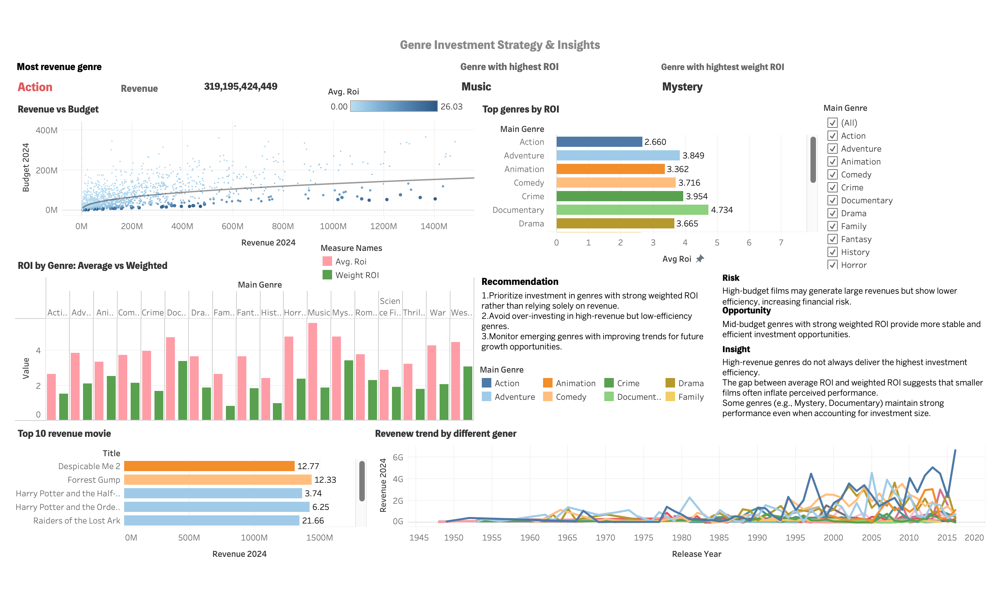
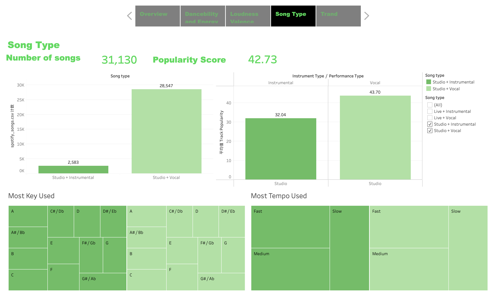
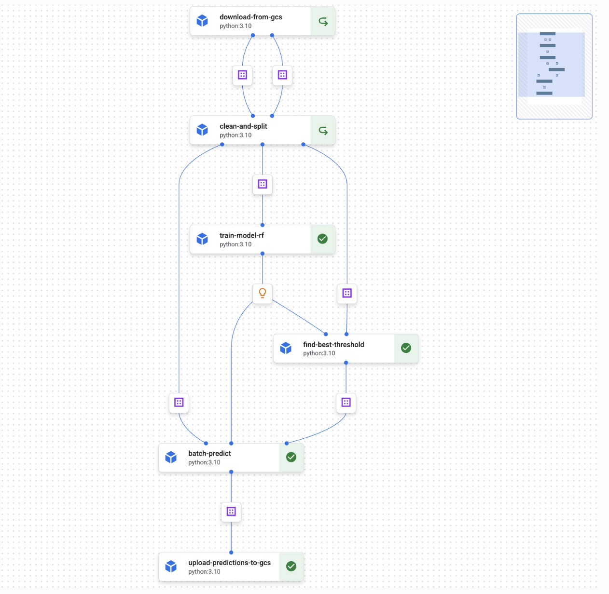
Interactive Tableau Dashboard for Investment Strategy
Overall
This project explores movie industry trends using Python and Tableau. By analyzing revenue, ROI, genre performance, and release patterns, I designed an interactive dashboard that transforms complex datasets into actionable insights for investment and business decision-making.
View Tableau Dashboard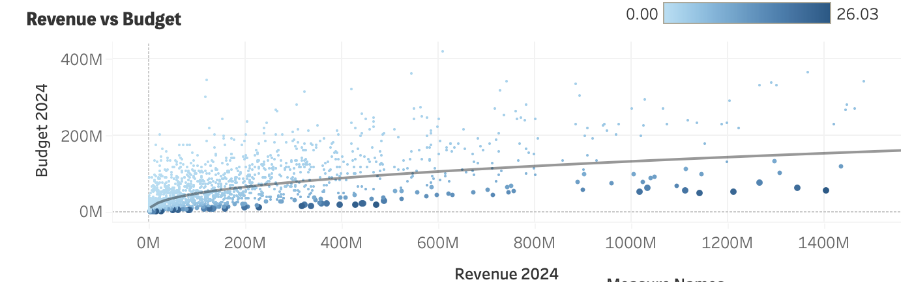
Feature 01
Compared movie revenue and budget across genres to identify high-performing categories and evaluate the relationship between investment size and box-office returns.
Feature 02
Compared average ROI with weighted ROI to reduce the influence of extreme outliers and provide a more realistic view of genre-level investment efficiency.
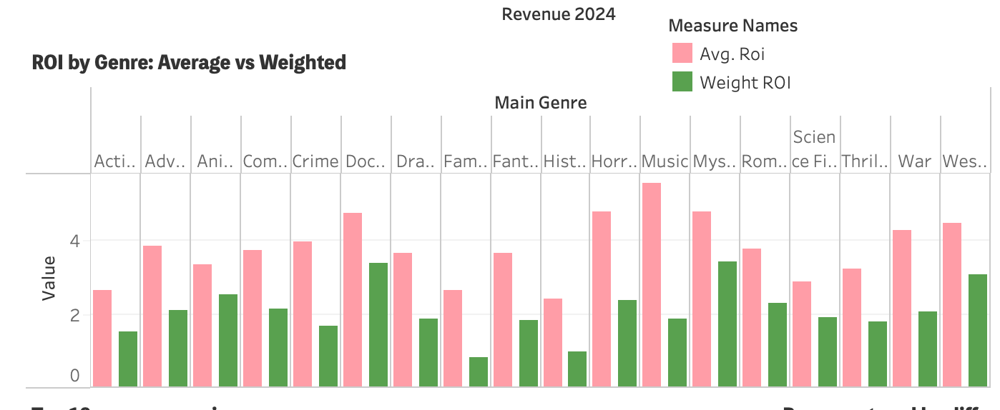
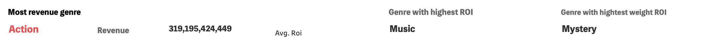
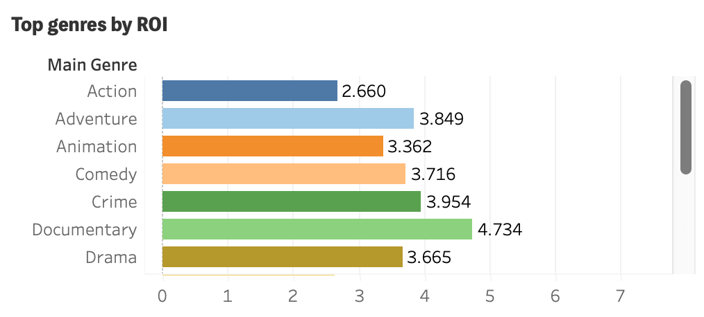
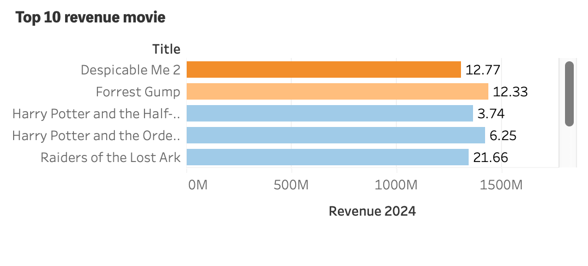
Feature 03
Ranked genres and individual movies by revenue and ROI to highlight differences between commercial success and investment efficiency.
Feature 04
Combined historical revenue trends with business recommendations to identify potential opportunities, risks, and more sustainable investment directions.
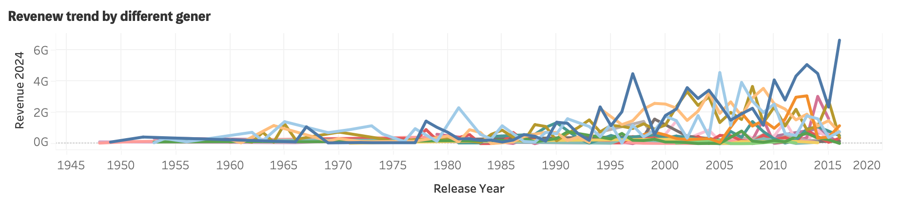
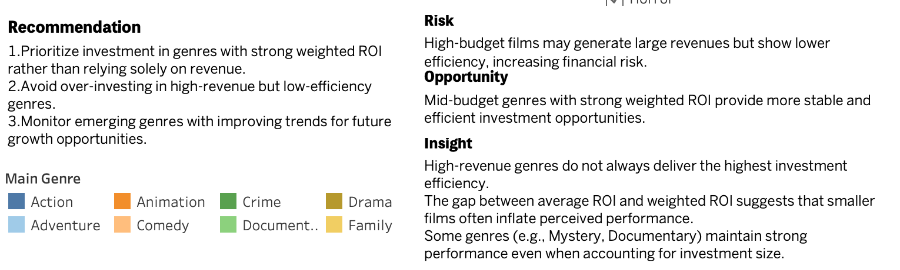
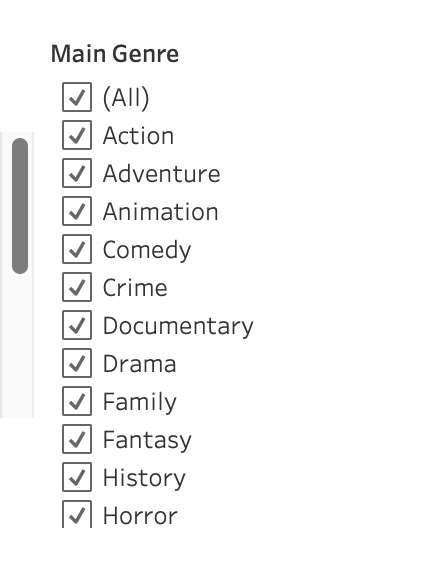
Feature 05
Select any movie genre to dynamically update all charts, rankings, and insights across the dashboard.
Interactive Tableau Dashboard for Music Analytics
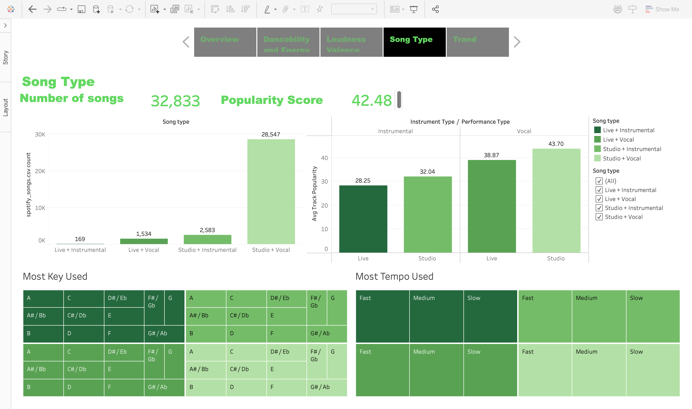
Overall
Designed and developed the Song Type section of a Tableau dashboard, visualizing listening behavior through song type distribution, popularity, musical key, and tempo to uncover user listening patterns.
View Tableau DashboardFeature 01
Visualized the most frequently used musical keys across different song types.
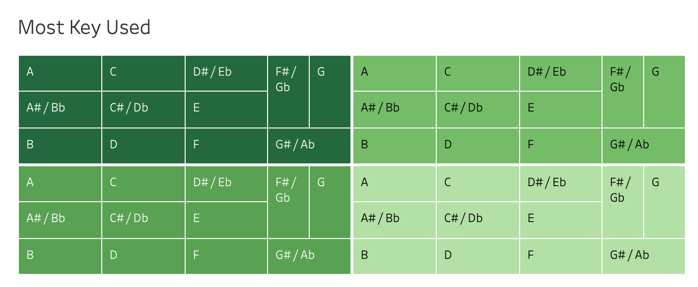
Feature 02
Compared tempo preferences between vocal and instrumental tracks.
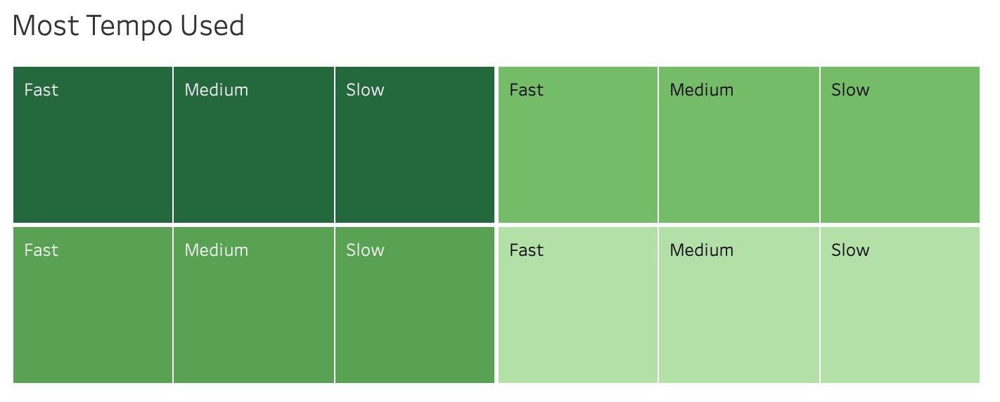
Feature 03
Enabled interactive filtering by song type for dynamic exploration of listening behavior.
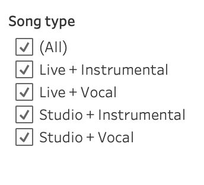
Predicting customer churn and identifying behavioral drivers to support customer retention decisions.
Business Problem
Customer churn can directly affect retention and long-term customer value. The goal of this project was to build a predictive model that identifies customers at risk of churn while uncovering the behavioral and service-related factors associated with attrition.
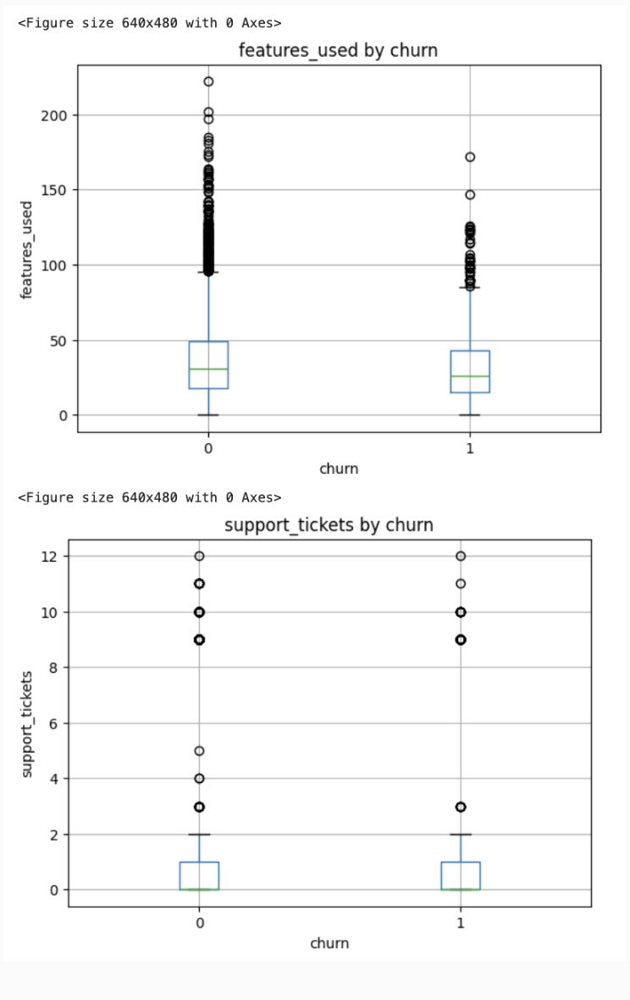
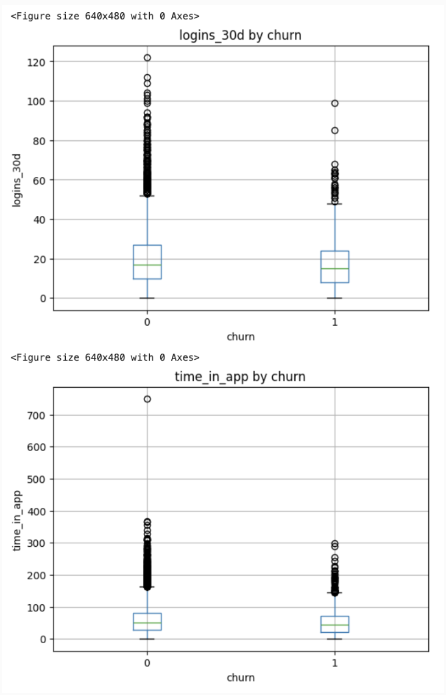
Feature 01
Churned customers tend to submit more support tickets and report lower satisfaction scores, suggesting that service friction and customer satisfaction are closely associated with attrition.
Feature 02
Churn varies across customer segments. Basic-plan customers show higher churn than Pro and Enterprise users, while Retail, Manufacturing, and LATAM also demonstrate relatively higher attrition rates.
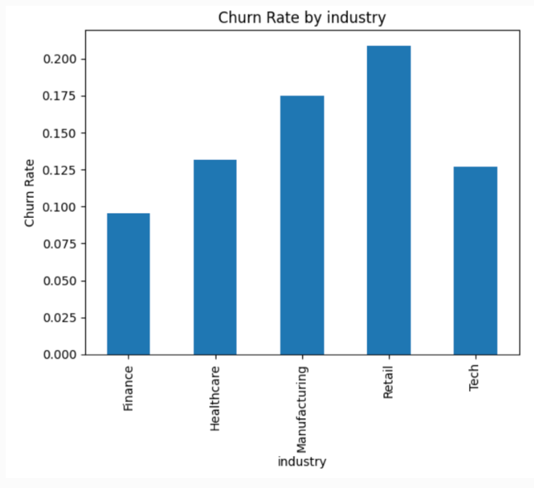
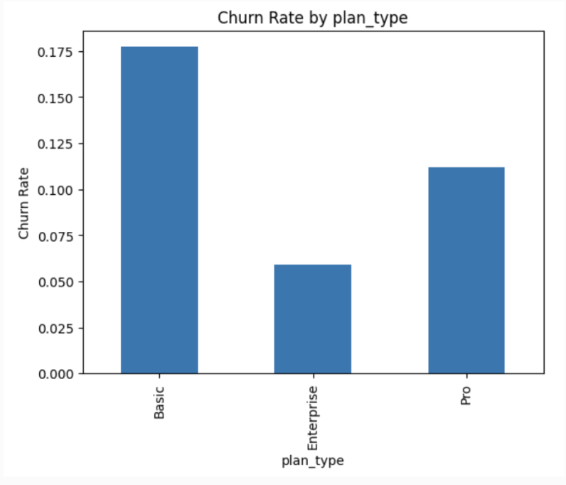
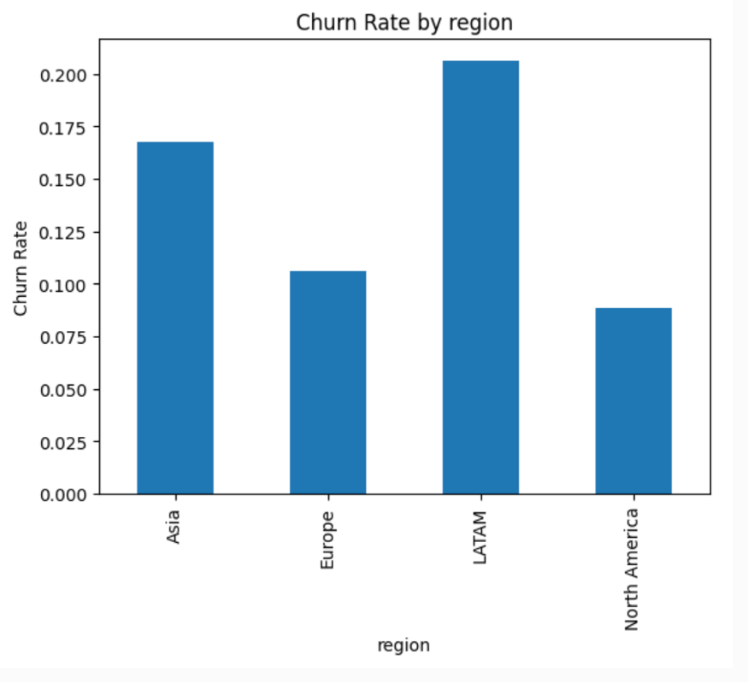
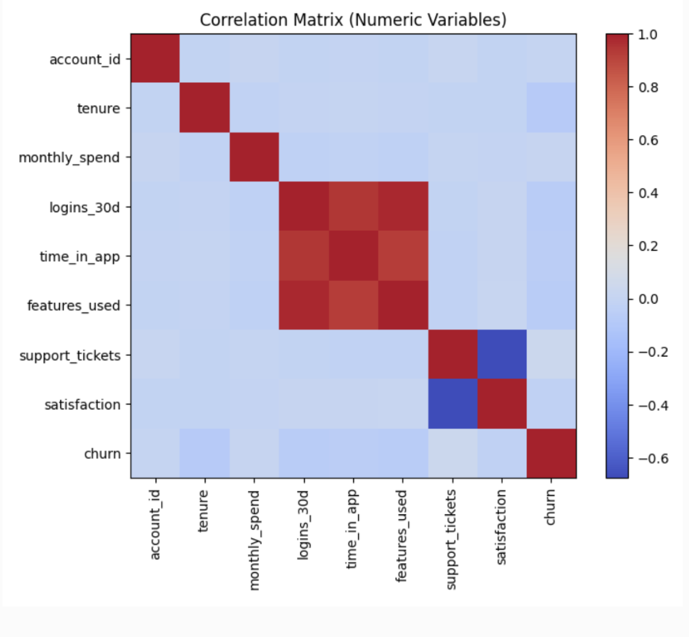
Feature 03
Engagement variables such as logins, time in app, and features used are strongly correlated, indicating overlapping behavioral signals. Satisfaction is negatively associated with both support tickets and churn, reinforcing customer experience as an important retention indicator.
Preparation
The dataset was cleaned and transformed to prepare it for machine learning, including missing-value treatment, numerical transformations, categorical encoding, and feature engineering.
Modeling Input
After preprocessing, the dataset retained the original observations while becoming fully numerical and free of missing values, creating a consistent input structure for downstream modeling and evaluation.
Pipeline
Built an end-to-end machine learning pipeline to automate data preprocessing, model training, threshold optimization, batch prediction, and cloud-based output storage.
Performance
The final model achieved a moderate F1-score, reflecting the challenge of predicting churn under class imbalance and a limited feature set.
Threshold
Adjusting the classification threshold improved recall without severely sacrificing precision, helping the model identify more at-risk customers.
Impact
The results highlight the importance of evaluating churn models beyond accuracy and using threshold optimization to improve minority-class detection.
Impact
Key achievements and impact across marketing, analytics, and content production.
Creative